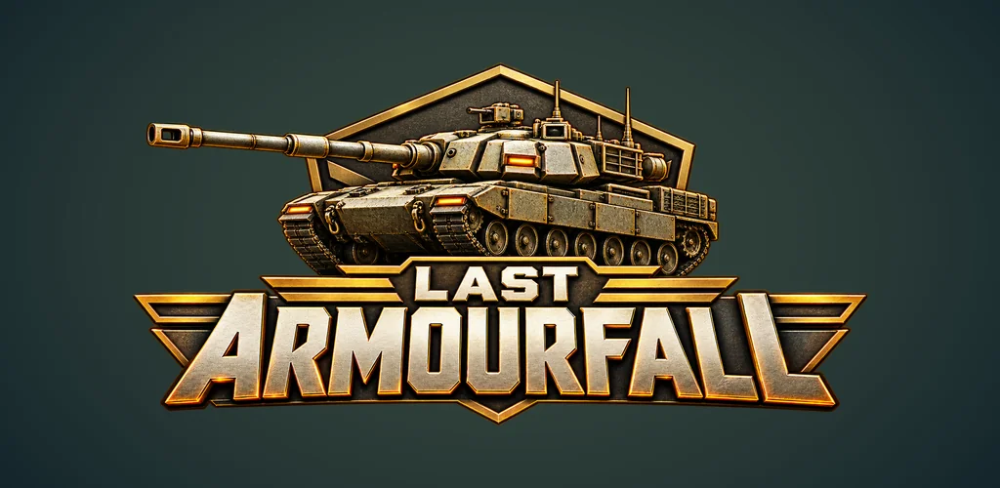

TANK COMBAT / VIRTUAL REALITY
Last Armourfall VR
Take the commander’s seat. Aim with your controller, direct reinforcements and fight through 500 campaign operations from inside your tank.
View on Meta QuestINDEPENDENT GAME DEVELOPMENT · INDIA
GAMES / WORLDS / WHAT’S NEXT
We turn ideas into places to play.
Independent games, made with curiosity.
And plenty more left to imagine.
01 / OUR GAMES
Meet the games we’re building.
Different screens. The same creative spirit.
TANK COMBAT / VIRTUAL REALITY
Take the commander’s seat. Aim with your controller, direct reinforcements and fight through 500 campaign operations from inside your tank.
View on Meta Quest
ANDROID / CLOSED TESTINGTANK COMBAT / MOBILE
Your force, your strategy. Drive tanks, support your infantry and issue Attack, Follow and Hold orders across a campaign of fortified bases and battlefields.
View on Google PlayIn closed testing. Access requires an eligible tester account.
02 / THE STUDIO
Anime Charmer is an independent game development brand from India. A small creative space for new ideas, new experiences and the joy of making games.
Our first world is Last Armourfall, bringing tank combat and army command to Android and Meta Quest. But our name is bigger than one game. We’re building a place for everything that comes next.
See what we’re makingFROM THE STUDIO / LAST ARMOURFALL VR
A glimpse into one of our game worlds. Watch the Last Armourfall VR cinematic trailer.
28-second cinematic animation using an Operation 20 campaign environment. Not recorded gameplay.
03 / GET IN TOUCH
Need a hand, found a bug, or have a question?
Reach out to Anime Charmer.
For game issues, include the game name, device model, game version and what happened. Please keep passwords and private account details out of your message.
YOUR INFORMATION. CLEARLY EXPLAINED.
Choose your game’s policy, or learn how this website handles information.